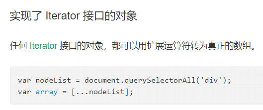

rest参数和扩展运算符
rest参数用于获取函数的多余参数，这样就不需要使用arguments对象了。rest参数搭配的变量是一个数组，该变量将多余的参数放入数组中。
解构赋值时也存在rest运算
扩展运算符可以看做是 rest 参数的逆运算，将一个数组转为用逗号分隔的参数序列
具体定义如下:
Spread syntax allows an iterable such as an array expression or string to be expanded in places where zero or more arguments (for function calls) or elements (for array literals) are expected, or an object expression to be expanded in places where zero or more key-value pairs (for object literals) are expected.
(对象展开是ES2018的特性)
对象的扩展运算符（...）用于取出参数对象的所有可遍历属性，拷贝到当前对象之中。（对象的扩展运算符和rest参数是ES2018的标准）
可以将字符串转化为数组，另外

可以配合解构赋值使用
扩展字符串时能正确解析四字节的utf-16
补充：
Rest syntax (parameters)
Rest syntax looks exactly like spread syntax, but is used for destructuring arrays and objects. In a way, rest syntax is the opposite of spread syntax: spread 'expands' an array into its elements, while rest collects multiple elements and 'condenses' them into a single element. See rest parameters.
=================
要注意区分何时表现为rest运算，何时表现为扩展运算（特别是解构赋值时）
=================
混合使用扩展运算的细节:
[...Object] 此时要求Object实现Iterator 接口，故类数组不支（类数组可以用 Array.from）
{...[4,5]} 结果为 {0:4,1:5}